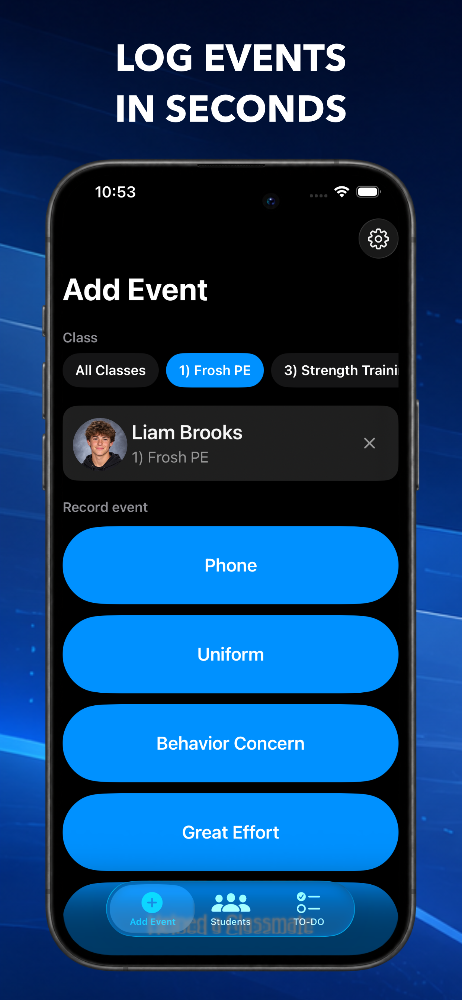
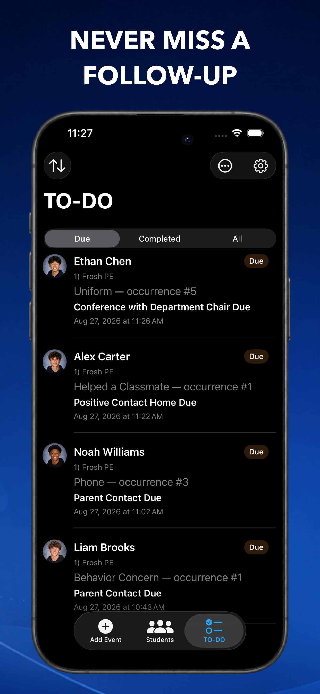
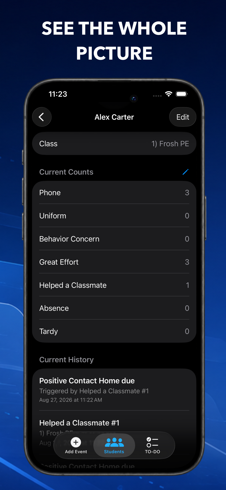
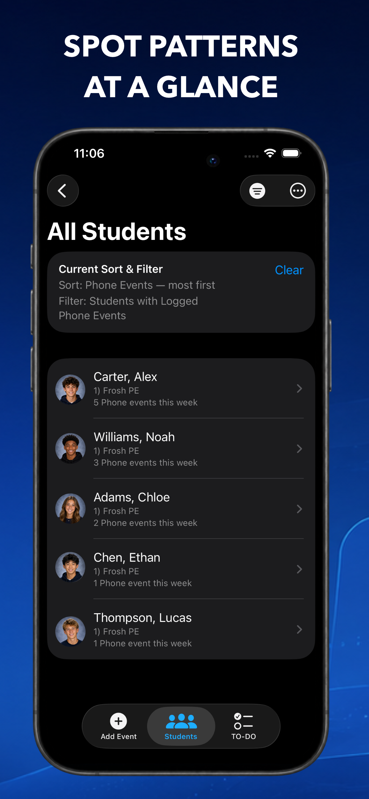
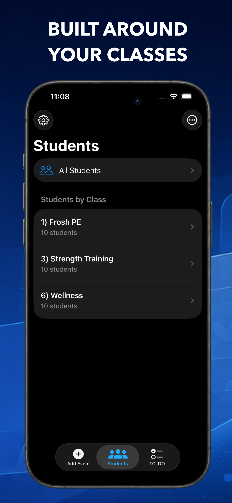
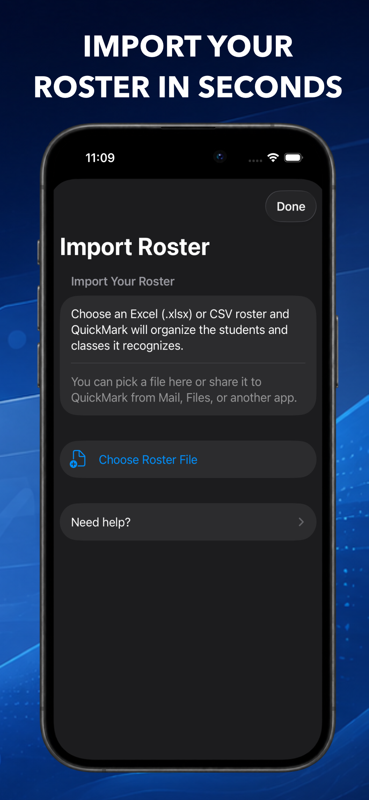

Student Events & Follow-Ups
QuickMark: Teacher Tracker
Keep track of the little things before they become big things.
QuickMark is a simple student event tracker built for teachers who need a fast way to record what happens throughout the school day and remember what needs to happen next. Log an event in seconds, keep a running student history, and let QuickMark turn repeated events into actionable follow-ups.
Quickly log student events
Select a student, tap an event, and you’re done. Track positive moments like great sportsmanship, helping a classmate, or personal bests, as well as everyday events like tardies, uniform issues, phone use, or behavior concerns. Create your own custom event types to fit your classroom.

Automatic follow-ups
Create simple rules that turn repeated events into TO-DOs. If three phone incidents mean it’s time for a parent contact, QuickMark can automatically add that follow-up to your list so you don’t have to remember it yourself.

A useful history for every student
See a student’s events, notes, follow-ups, and class history in one place. Add notes when extra context matters, manually adjust counts when needed, and keep previous class history available without carrying old counts into a student’s fresh start.

Find what matters
Sort and filter students by event counts, event type, follow-up status, and time period. Quickly answer questions like, “Who has had uniform issues this week?” or “Which students still need a follow-up?”

Built around your classes
Organize students by class, support students enrolled in multiple classes, and archive old classes when a semester or school year ends. QuickMark preserves useful history while keeping your current rosters clean.

Import your rosters
Get started quickly by importing student rosters from CSV or Excel files. QuickMark can recognize returning students so their previous history stays connected while their new class starts fresh.

Notes and student photos
Add context to individual events and TO-DOs, and optionally add student photos to make finding the right student even faster.
Made for the teacher, not the SIS
QuickMark isn’t trying to replace your school’s student information system, gradebook, or learning platform. It’s a lightweight tool for the information teachers often need to capture in the moment: what happened, how often it has happened, and what needs to happen next.
Spend less time trying to remember the small details and more time acting on the ones that matter.